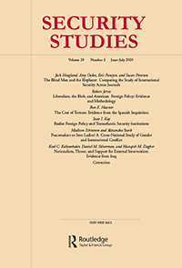

收录于合集 #理论研究 96个

作品简介
【作者】 Sean I. Kay，俄亥俄卫斯理大学（Ohio Wesleyan University）罗布森政治学教授（Robson Professor of Politics and Government），俄亥俄州立大学莫尚国际安全研究中心（Mershon Center for International Security Studies）莫尚研究员（Mershon Associate）。
【编译】 崔宇涵（国政学人编译员，北京大学国际关系学院硕士）
【校对】 陈勇
【审核】 谢菁
【排版】 马璐
【美编 】黄竹音
【来源】 Sean I. Kay (2020) Realist Foreign Policy and Transatlantic Security Institutions, Security Studies , 29:3, 493-514, DOI: 10.1080/09636412.2020.1761442
【归档】 《国际关系前沿》2021年第1期，总第28期。
期刊简介

Security Studies（《安全研究》）收录出版创新性的学术稿件,包括理论研究、实践经验或两者兼有。安全研究包含广泛的议题，从核扩散、核威慑、军民关系、战略文化、种族冲突、流行病与国家安全、民主政治、外交决策到定性与多方法研究的发展。根据2018年的Journal Citation Reports，其2018年的影响因子为1.706，在91种国际关系类期刊中排名第30。
现实主义外交政策和跨大西洋安全机制
Realist Foreign Policy and Transatlantic Security Institutions
Sean I. Kay
摘要
本文重新审视了国际关系理论中最重要的辩论之一，即现实主义和自由主义在安全机制问题上的辩论。关于对北大西洋公约组织（NATO，北约）的现实主义研究表明，现实主义假设反映在该联盟采取的制度形式上，即引导美国力量为西欧提供对抗苏联的集体防御（方式）。然而，现实主义却未能与冷战后的各国领导产生共鸣，后者以一种自由主义愿景来指导联盟发展，主要是通过军事干预和扩大成员来传播西方价值。北约的自由主义路径是基于对机制和安全的错误假设，因此导致了低效的军事行动和代价高昂的过度扩张。截至2020年，北约正在冒着提供虚假安全承诺的风险。
冷战期间，现实主义者对跨大西洋安全机构的设想在北大西洋公约组织（NATO）得到了实现，该组织引导美国与欧洲结盟共同对抗苏联。然而，冷战结束后，现实主义者对自由主义秩序建设（liberal
order-
building）的警告被决策者所忽视。本文考察了现实主义与自由主义理论在解释作为安全机构的北约时的张力。证据表明，自由主义对北约的理解建立在对制度和安全的错误假定上。这一证据使得国际关系理论中最激烈的争论之一的重要部分——分别以米尔斯海默（John
J. Mearsheimer）和基欧汉（Robert O.
Keohane）为代表的现实主义和自由主义在安全制度上的分歧尘埃落定。作者认为，现实主义者对关于北约的自由主义观点的挑战显示了其预测价值，揭示了具有潜在危险的政策假设和错误的学术分析。
文章导读
01
现实主义与北约
本文对现实主义和自由主义对作为安全机构的北约的假定进行了狭义的检验。作者借鉴了现实主义关于国际合作的思想，并将其作为方法论框架，挑战自由主义关于安全制度的主张。现实主义者对安全机构能否减轻国际无政府状态的危险表示怀疑。而自由主义者则认为，反映共同原则和价值观的合作，可以通过民主的透明度（transparency of democracy）和成员间信息共享缓解安全困境（security dilemma），继而降低提供安全的交易成本，后者是由制度程序产生的效率收益来测量的。不过，北约的制度属性并非与生俱来，它的成员国在冷战期间为联盟管理发展了制度资产，但这些制度资产依赖于权力分配和美国在前沿的军事存在。冷战结束后，北约成员国认为，适应性强、自由开放才是北约的优势所在。我们现在已经取得了可测量的结果：北约在巴尔干半岛、阿富汗和利比亚发动了战争；许多成员国的政府是非自由的；俄罗斯在乌克兰保持着存在；新盟友在怀疑美国是否会冒着核战争的风险保护他们。美国总统特朗普（Donald J. Trump）质疑北约的价值，法国总统马克龙（Emmanuel Macron）更是称北约已经“脑死亡”。
02
**
**
现实主义、北约，以及冷战/后冷战时期的变量
整个冷战期间，北约主要反映了现实主义的联盟思想，其中的制度性资产依赖于美国军事力量的输送（channeling）。冷战结束后，决策者们高度乐观地认为，通过扩大成员国规模，北约可以承担起新的建立自由主义秩序的使命，包括危机管理和民主巩固。米尔斯海默对上述假定提出了挑战：
制度无法带来安全，国家是无政府体系中的主要行为体，权力决定国际结构并塑造结果，国家对其选择进行成本效益评估，并不得不担心绝对收益和相对收益，在安全受到威胁时依赖自助。
用这种视角看待当今欧洲安全，可以得出：（1）北约仍然依赖于美国的权力运行，但北约的决策过程使美国难以通过该机构发起军事行动；（2）成本-
收益算计引发了集体行动的问题，削弱了制度可信度，稀释了决策，激励了搭便车行为；（3）认为制度可以识别并惩罚背叛合作或原则的假定在北约并不成立；（4）即使成员国认为北约的意图可能是善意的，但对于俄罗斯等外部行为体而言，北约可能被视为威胁；（5）通过对倾向于反自由主义的北约成员国施加影响力，俄罗斯可以在该机构的决策过程中有效运作，从而获得收益。
在公约中，美国作出的承诺是很模糊的。唯一的“保证”是，如果一个成员国受到攻击，它将被视为对所有成员的攻击；各国同意在必要时协调应对，这可以包括但不必然包括或限于军事选择。
美国在核时代的背景下寻求自助的灵活性，而对欧洲盟国来说，这一承诺的可信性只能以部署在前线的美国军队的数量来衡量。 **
**约翰·伊肯伯里(G. John
Ikenberry)断言：“许多支持北约和遏制政策的人，不仅仅是为了建立一个对抗苏联的联盟，还因为这些举措会进一步巩固西方自由民主秩序。”然而，艾奇逊（Dean
Acheson）曾在1966年反思道：“显而易见的事实是，北约是一个军事联盟。无论过去和现在，其目的都是为了阻止俄国动用军事力量，并在必要时应对俄国在欧洲动用武力的恐惧。这个目的已经相当过时了。”
美国国务院官员查尔斯·博伦（Charles
Bohlen）则总结说：“我们参与北大西洋公约的安排完全是由于苏联的政策和实力……如果1947年和1948年苏联没有阻止德国统一，就不会有北约。”
总之，在1949年，美国决策者普遍持有一种现实主义的观点，认为北约是一个制度属性有限的联盟。
艾奇逊后来证实，北约仅仅是一个“预整合组织，旨在为不协调的单独行动制定总体计划，希望在遇到麻烦的时候有一个计划和力量加以应对”，乔治·凯南（George
F. Kennan）也对北约的制度建设提出了现实主义的担忧。
03
北约的虚假承诺
北约只有在一些外部事件的推动下才成为一个组织。这些外部事件包括中国革命的胜利、苏联拥核以及朝鲜战争，它们使承诺的可信性和联盟凝聚力拥有了最大价值。协商机制与联合军事指挥相结合，促成了数十万美国军队在欧洲的前沿部署。摩根索（Hans
J.
Morgenthau）指出：“在目标全面性以及用于实现目标的技术方面，北约确实超越了传统联盟，转向了一种新型的功能性组织。”米尔斯海默也观察到，“由于美国充当了守夜人（night
watch）的角色，西欧国家对相对收益的担忧减轻，而且，这些国家愿意让它们的经济变得紧密相互依赖。”但是米尔斯海默也强调：
“北约基本上是冷战期间欧洲权力分配的一种表现，是欧洲的均势而不是北约本身，为维持欧洲大陆的安全提供了关键。面对苏联的威胁，北约本质上是一种管理权力的工具。”
**
**冷战后，一个关键的现实主义预言失败了。米尔斯海默曾在1990年断言，没有了苏联的威胁，美国有可能放弃欧洲大陆，它领导了40年的北约就可能瓦解。因此，北约的存续成为反对现实主义对制度和安全的理解的依据。其中，关键是理解制度的相关性。米尔斯海默写道：“北约在冷战中的成功不能作为制度主义理论的支持，因为威慑实际上与制度主义的主张无关。”杰克•斯奈德（Jack
Snyder）的警告很有先见之明：“如果试图建立的制度不起作用，将造成巨大损害……它将使西方国家深深卷入其无法解决的问题，从而损害西方。”
04
自由主义至上：冷战后的北约
从1994年到2014年，美国及其跨大西洋盟友用了20年时间为北约制定了自由主义的“建立秩序（order- building）”战略，主要体现在对巴尔干半岛的多边军事干预和成员国的数量扩大。冷战时，美国从未认为自己在除德国以外的中欧和东欧地区具有“最大的战略利益”。正如沃尔兹(Kenneth N. Waltz)曾在1979年解释说：“尽管我们更希望东欧人能够自由选择自己的统治者，但我们也可以理解，苏联在管理这个传统上动荡不安的地区时，自有其优点。” 因此，以北约东扩来传播民主的想法并不合理，尤其在是加入了军事考虑时。在达成东扩共识的过程中，北约各国同意扩大承诺区域，而不扩张军事能力。这意味着北约的集体防御承诺将通过加强某个受到威胁的盟友来实现，相比冷战时期可信的前沿军事部署，这是一个非常危险的决定。前国防部长罗伯特·盖茨（Robert Gates）曾在2014年表示： “北约的扩张是一种政治行为，而不是经过慎重考虑的军事承诺，因此它破坏了联盟的目标，并鲁莽地忽视了俄罗斯的重要利益诉求。”
**
**
05
自由主义假定与北约的安全供给（security provision）
自由主义者认为北约加强了安全，因为它的制度属性反映了合作的规范，它可以减少国际无政府状态中固有的安全竞争。本文中对制度的分析方法与基欧汉的理论联系最为紧密。 基欧汉的理论认为，各国可以通过原则、规则、规范和决策程序指导的国际制度，实现互利共赢，增强合作信心。制度被认为可以增加安全，因为国家间的信息共享和社会化可以减少恐惧和不确定性。 这些过程可以通过提高集体行动的效率来改善安全困境，降低交易成本。此外，通过成员激励，他们可能扩大欧洲民主国家之间现有的和平。基欧汉挑战了米尔斯海默的分析框架，他问道：“如果这些机构缺乏意义，我们要如何解释大国投入资源来扩大国际制度的意愿？”按照基欧汉的理论，北约等国际制度可以通过降低交易成本，并使各国在符合自身利益时进行合作成为可能，从而在安全关系中发挥作用。人们可以通过理解替代策略的相对成本、契约或治理问题作为合作的障碍以及制度作为实现或维持合作均衡的手段的作用来预测制度持续性。 然而，上述关于北约的假定未能将制度资产视为不安全的根源。例如，北约的决策程序中没有“投票权”，其开展军事行动依赖于正式和非正式磋商达成共识。 而“否决”（“veto”）的决策方式不仅发出了“人人为我，我为人人”的信号，它还允许29个成员国中的任何一国都可以阻止北约的行动，造成僵局，损害北约的信誉。北约成员国身份与民主改革的联系表明，制度能够为有抱负的成员国提供正面的激励。但在他们加入后，这种逻辑失去了价值。北约没有制裁或驱逐一个违背其承诺的国家的程序/进程。任何创建此类规则改革的努力，都会在协商一致的过程中被偏离其承诺的成员国阻止。因此，北约的决定很容易在僵局中被否决，或只能反映所有成员国都同意的最大公约数。
06
自由主义战争
1991年，南斯拉夫解体，先后引发斯洛文尼亚战争、克罗地亚战争、波斯尼亚战争，挑战了北约在冷战后的角色。北约各国清楚种族清洗和战争罪行威胁到北约新使命的可信度，但他们也明白干预的危险性；因此，北约采取了遏制政策。1995年代顿和平协定的签订标志着战争的结束。这其中，北约花了数年时间制定多国干预行动计划、建设总部和发展协调非成员国的演习。
然而，关键的推动因素是美国决定通过北约输送其力量。
美国的部队到位后，欧盟、欧安组织、世界银行和国际货币基金组织等其他机构纷纷开始帮助重建波斯尼亚。同时，科索沃已经受益于美国单方面的威慑政策。在1998年，科索沃解放军（Kosovo
Liberation Army）迫切要求独立的时候，美国把它的单边威慑转向了北约的多边渠道。
但是，在1998年至1999年的大部分时间里，该机构陷入决策僵局，是塞族人种族清洗策略使北约内部达成一致。与此同时，信息流动也未能为决策提供有效信息。
**
**新的制度使命的信誉（credibility），而非美国或任何其他成员国的利益，成为了北约介入南斯拉夫战争的主要驱动因素。由于新的制度义务，北约的信誉成为至关重要的利益。
就北约的制度而言，信息流动和决策程序成为提供安全的阻碍，并在军事计划、战略目标和信息共享三个方面都有所体现。
根据北约指挥官詹姆斯·埃利斯上将的说法，北约的制度化参与影响了“计划和执行的各个方面”。另一方面，当时的19个北约成员国无法或不愿共同做出赢得一场短暂战争所需的决定。最终，北约的决策被归入美国、英国、法国和德国的“四方”，这些国家的行动决策不受北约制度的制约。越进入艰苦的战斗阶段，就有越多北约成员国放弃了制度程序。
北约最终赢得了战争，并大大鼓舞了那些推行自由主义外交政策的人。比尔·克林顿宣称：“无论你生活在非洲还是中欧，或者其他任何地方，如果有人因为种族、种族背景或宗教信仰而追逐无辜平民并试图杀死他们，我们有能力阻止，我们也将阻止。”而对其他一些参与者来说，这场战争对美国官员对北约的看法产生了负面影响。美国国防部长威廉·科恩（William
Cohen）承认：“如果我们采取单方面行动，将会有一场更强大、更有侵略性、更有杀伤力的战役……当然，不同之处在于，我们是作为一个联盟行动。”负责北约行动的海军上将李顿·史密斯(Leighton
Smith)的结论是，“我们得到的教训是，联合不是打战争的好方法。”
07
北约东扩
冷战后，北约东扩被纳入《北大西洋公约》，其第十条允许新成员加入。自1999年以来，北约的规模从冷战刚结束时的16国发展到现在的30国。
北约东扩成为冷战后美国及欧洲自由主义构想的核心，官方赋予的理由是巩固民主，从而促进稳定，其依据是之前北约的扩张历史。但冷战时期北约扩张的历史表明，这一假定毫无根据。
例如，希腊和土耳其早在1952年就加入北约，但这并未促进其国内的民主化。在希腊，北约没有反对希腊军方1967年通过政变推翻民主制度；作为北约成员国，土耳其经历了一系列军事政变。作为北约的前线盟友，土耳其的军队维持着这个穆斯林国家的世俗化。土耳其现在由一个偏执的独裁者——埃尔多安(Recep
Tayyip Erdogan)统治，他囚禁记者和教授，镇压持不同政见者。此外，还有联邦德国与西班牙的案例。
北约东扩的支持者认为，随着新加入的国家展现出对民主原则的承诺，保护少数族群，并结束与邻国的领土争端，北约东扩进程使安全得以扩散。
北约的问题在于制度——该组织没有办法约束成员国执行其规范。
北约条约中没有制裁、中止或驱逐条款，机构中也没有相关程序。近年来，波兰、匈牙利和土耳其正在变得不自由，专制的领导人利用选举获得权力，并采用超越宪法的手段来统治。北约面临内部分裂的风险，俄罗斯可以利用这种分裂获益。
与此同时，北约东扩政策从一开始就引起了俄罗斯的警觉。
而现状则与自由主义者的期待背道而驰——非自由的民主国家威胁着自由秩序建立的基础。北约似乎无法影响这个结果——它同样是自己决策过程的受害者。
米尔斯海默认为，北约的过度扩张是2014年俄罗斯深度介入乌克兰危机的根本原因。
北约在2008年宣布把乌克兰和格鲁吉亚纳为其成员。这一制度信号让北约进入了（俄罗斯）这个日渐衰落、偏执的有核大国的后院，引发了安全困境。他认为，在失去乌克兰这一对北约的缓冲后，俄罗斯的采取的行动是防御性的。
俄罗斯强烈反对北约东扩
，亲西方的俄罗斯政治领导人发出警告，随着北约东扩，他们将在国内被前共产主义者和民族主义者所吞噬。俄罗斯的担忧在很大程度上是由观念驱动的，对北约东扩相对收益可能转化为以俄罗斯为代价的军事收益的担忧在俄罗斯根深蒂固。然而，直到2008年北约在布加勒斯特举行会晤之后，莫斯科才公开对格鲁吉亚和乌克兰采取行动。在莫斯科看来，北约跨过了红线，宣告着“北约欢迎乌克兰和格鲁吉亚加入北约的欧洲-
大西洋愿景”。
米尔斯海默最后总结道：“（美国应）结束这场冲突，并维持乌克兰作为俄罗斯和北约之间的独立缓冲国地位，这是华盛顿的深层利益。”此外，米尔斯海默还认为与俄罗斯保持良好关系至关重要，因为美国需要莫斯科的帮助来应对伊朗、叙利亚、阿富汗，并最终“帮助对抗中国——美国唯一真正的潜在对手。”
另外，他还指出，即使在道德方面，现实主义者也占了上风：“向乌克兰提供虚假承诺合乎道德吗？”
08
乌克兰与自由主义面临的挑战
乌克兰危机中，美国及其盟国制裁了俄罗斯政界和商界领袖，暂停了北约与俄罗斯的合作，将莫斯科从八国集团(G8)中剔除，并开始在东欧象征性地轮流部署军队。与拥有压倒性军事和经济优势的北约相比，俄罗斯实力较弱。然而，俄罗斯是一个核大国，它在乌克兰东部的主导地位不断加强，并通过切断北约国家的能源供应作为制裁。虽然 美国的自由主义愿景在乌克兰危机中达到了顶峰，但虚假的承诺给现实带来了高昂的预期成本。 乌克兰重建和改革的任务是任何国家都无法完成的。基欧汉看到了虚假承诺的可能性，但没有发现北约内部的自由主义理论和实践的矛盾。他确实指出，“自由制度主义者认为制度植根于权力和利益的现实情况，不认为北约能在任何可以想象的条件下保持稳定。” 然而，自由主义者仍未能充分考虑北约的制度资产和权力现实会如何使得安全供给复杂化、甚至可能减少。
**
**
09
结论：回到未来？
本文考察了一个涉及北约和现实主义/自由主义制度理论的具体案例。当然，自由主义者还可以展示其他有效的制度形式。此外，北约经验中的其他因素也可能为未来建立自由主义秩序的努力提供借鉴。然而，鉴于现在欧洲面临的潜在危险，回归现实主义，对这些（自由主义的）思考提出基本挑战是必要的。米尔斯海默的现实主义检验是理解自由主义关于安全制度假设所表现出的政策的一个重要组成部分。 冷战后的欧洲的案例居于是现实主义/制度主义分歧的核心，而关于北约的自由主义政策和学术假定完全是乌托邦式的。自由主义学者面临的挑战是，如何更好地融入现实主义方法论，以检验制度相关性以及制度形式的变化如何影响安全结果。 作者指出，如果不能在对安全制度的理解上实现现实主义与自由主义的新平衡，欧洲可能又会面临国际联盟(League of Nations)时期那样的情况，即制度与地缘政治现实的脱节。正如卡尔（E. H. Carr）所提醒的那样：“政治科学必须建立在认识到理论与实践相互依存的基础上，而这只能通过乌托邦与现实的结合来实现。” “通过现实主义批评揭露乌托邦大厦的空洞，是政治思想家的首要任务。”
编译者述评
本文从近年来现实主义和自由主义国际关系理论辩论的视角下，重新审视了冷战后北约组织的发展历程，以及两种理论对于安全机制的解释力。作者通过对冷战时期北约建立的历史背景和政策原因的梳理，以及冷战后北约在南斯拉夫战争、乌克兰问题等地区热点事件中的作用的呈现，证明了基于权力基础上的现实主义国际关系理论对于安全机制的作用更具解释力。同时，上述考察也指出了自由主义国际关系理论在涉及安全机制方面的错误假定，以及以军事干预和北约扩张来传播西方自由民主价值观的自由主义愿景的错误和危险性。如今，北约的战略框架也正面临着挑战，美欧安全合作方面的矛盾更加突出，本文的结论也为理解这一现象提供了一个有益的视角。
文章观点不代表本平台观点，本平台评译分享的文章均出于专业学习之用, 不以任何盈利为目的，内容主要呈现对原文的介绍，原文内容请通过各高校购买的数据库自行下载。

国政学人
支持学术公益与知识传播
微信扫一扫赞赏作者 __赞赏
已喜欢，对作者说句悄悄话
取消 __
发送给作者
发送
最多40字，当前共字
上一页 1/3 下一页
长按二维码向我转账
支持学术公益与知识传播
受苹果公司新规定影响，微信 iOS 版的赞赏功能被关闭，可通过二维码转账支持公众号。